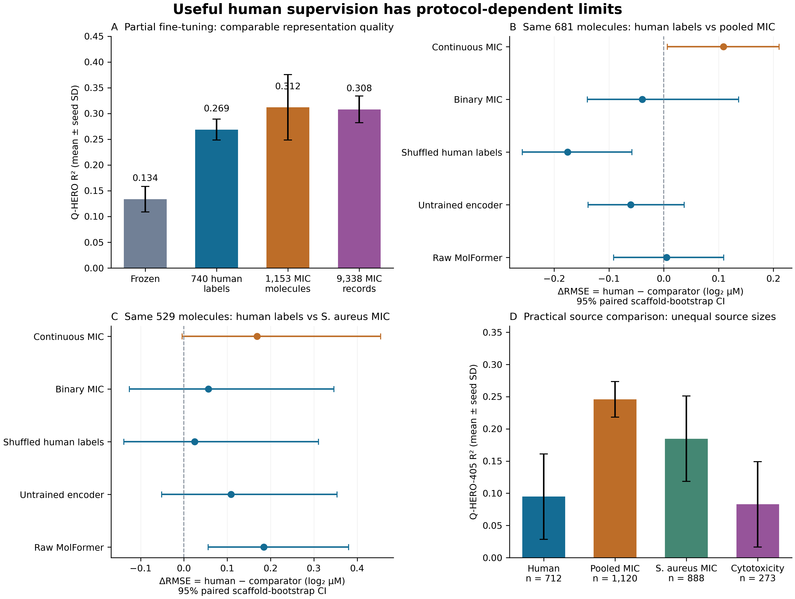

The DOCX includes the historical v8 sections and these new S7–S11 sections.
The new experiment holds source molecules, source cation-scaffold split, frozen MolFormer features, initial weights and training budget constant within each matched panel. Source sizes: 681 pooled-MIC common molecules (4,938 underlying records) and 529 exact S. aureus-MIC common molecules (855 records). Evaluation sizes: QAC-104 = 104, Q-HERO-405 = 405, OOD-17 = 17. Every evaluation cation, including counterion variants, is absent from all new sources. Binary source labels use BCE-with-logits; quantitative source targets use source-training standardised MSE. A 768→256→128 neural encoder is trained for 80 epochs with five paired seeds. Target decoders refit on fixed target folds, so this is representation evaluation rather than direct transfer. Bootstrap intervals condition on those folds and trained seeds. The Ridge decoder with target-training standardisation can extrapolate unstably; all extreme results remain available. No non-inferiority or equivalence margin is introduced.

Figure S10. Supervision comparisons. This is Figure 7 from the revised manuscript; the partial-fine-tuning and frozen-head panels have different cohorts and architectures.
Table S5. New experiment RMSE in log2 µM, mean ± SD across five source-training seeds (one raw baseline run). Both CatBoost and Ridge are reported. Extreme Ridge errors are retained as sensitivity results rather than removed.
| Panel | Supervision / decoder | QAC-104 RMSE | Q-HERO-405 RMSE | OOD-17 RMSE |
|---|---|---|---|---|
| baseline | raw-molformer / catboost | 2.074 | 1.602 | 1.698 |
| baseline | raw-molformer / ridge | 2.240 | 2.187 | 3.173 |
| matched-pooled | expert / catboost | 2.207 ± 0.037 | 1.607 ± 0.032 | 1.836 ± 0.203 |
| matched-pooled | expert / ridge | 2.364 ± 0.273 | 2.412 ± 1.391 | 2.048 ± 0.699 |
| matched-pooled | expert-shuffled / catboost | 2.192 ± 0.049 | 1.780 ± 0.105 | 1.916 ± 0.182 |
| matched-pooled | expert-shuffled / ridge | 2.525 ± 0.656 | 1.877 ± 0.102 | 2.030 ± 0.184 |
| matched-pooled | quant-binary / catboost | 2.064 ± 0.108 | 1.646 ± 0.041 | 1.927 ± 0.214 |
| matched-pooled | quant-binary / ridge | 2.049 ± 0.054 | 1.738 ± 0.124 | 2.318 ± 0.664 |
| matched-pooled | quant-continuous / catboost | 2.033 ± 0.047 | 1.497 ± 0.052 | 1.986 ± 0.177 |
| matched-pooled | quant-continuous / ridge | 3612.647 ± 8059.806 | 2.559 ± 0.786 | 7.191 ± 5.484 |
| matched-pooled | quant-shuffled / catboost | 2.068 ± 0.095 | 1.605 ± 0.050 | 1.909 ± 0.165 |
| matched-pooled | quant-shuffled / ridge | 3.206 ± 0.908 | 3.978 ± 1.342 | 7.624 ± 11.194 |
| matched-pooled | untrained / catboost | 1.994 ± 0.047 | 1.666 ± 0.074 | 1.821 ± 0.122 |
| matched-pooled | untrained / ridge | 4.466 ± 4.042 | 3.190 ± 0.813 | 15.258 ± 20.300 |
| matched-sa | expert / catboost | 2.092 ± 0.073 | 1.785 ± 0.075 | 2.257 ± 0.416 |
| matched-sa | expert / ridge | 11.183 ± 11.272 | 3.517 ± 2.538 | 2.909 ± 1.886 |
| matched-sa | expert-shuffled / catboost | 2.141 ± 0.137 | 1.761 ± 0.040 | 2.078 ± 0.201 |
| matched-sa | expert-shuffled / ridge | 2.404 ± 0.638 | 1.987 ± 0.415 | 5.493 ± 7.625 |
| matched-sa | quant-binary / catboost | 2.030 ± 0.088 | 1.730 ± 0.022 | 1.959 ± 0.209 |
| matched-sa | quant-binary / ridge | 2.457 ± 0.779 | 2.017 ± 0.360 | 1.984 ± 0.269 |
| matched-sa | quant-continuous / catboost | 2.075 ± 0.059 | 1.617 ± 0.016 | 2.047 ± 0.168 |
| matched-sa | quant-continuous / ridge | 5.557 ± 2.448 | 2.237 ± 0.188 | 4.191 ± 1.787 |
| matched-sa | quant-shuffled / catboost | 2.229 ± 0.117 | 1.670 ± 0.069 | 1.818 ± 0.276 |
| matched-sa | quant-shuffled / ridge | 6.942 ± 5.095 | 32.905 ± 42.839 | 5.285 ± 0.886 |
| matched-sa | untrained / catboost | 2.022 ± 0.053 | 1.677 ± 0.032 | 1.891 ± 0.161 |
| matched-sa | untrained / ridge | 5.308 ± 3.679 | 3.291 ± 1.476 | 5.811 ± 1.834 |
| full | expert-full / catboost | 2.065 ± 0.017 | 1.631 ± 0.060 | 2.112 ± 0.232 |
| full | expert-full / ridge | 2.213 ± 0.092 | 1.853 ± 0.226 | 1.808 ± 0.285 |
| full | quant-iltox-full / catboost | 1.944 ± 0.084 | 1.641 ± 0.059 | 1.719 ± 0.146 |
| full | quant-iltox-full / ridge | 4.187 ± 2.603 | 3.204 ± 0.496 | 8.874 ± 12.739 |
| full | quant-pooled-full / catboost | 2.091 ± 0.114 | 1.489 ± 0.027 | 1.779 ± 0.125 |
| full | quant-pooled-full / ridge | 7.313 ± 7.252 | 2.494 ± 1.162 | 2.654 ± 0.588 |
| full | quant-sa-full / catboost | 2.041 ± 0.065 | 1.547 ± 0.064 | 1.906 ± 0.134 |
| full | quant-sa-full / ridge | 5.224 ± 4.519 | 9.759 ± 16.934 | 41.728 ± 75.709 |
Table S6. Q-HERO-405 CatBoost expert-minus-comparator ΔRMSE with 95% whole-scaffold bootstrap intervals. Negative values favour expert supervision. Contrasts average squared errors across seeds before forming RMSE; they therefore differ slightly from subtracting the means of seed-specific RMSE.
| Panel | Expert minus | ΔRMSE | 95% lower | 95% upper |
|---|---|---|---|---|
| matched-pooled | quant-continuous | +0.109 | +0.007 | +0.210 |
| matched-pooled | quant-binary | -0.039 | -0.139 | +0.136 |
| matched-pooled | expert-shuffled | -0.175 | -0.258 | -0.058 |
| matched-pooled | quant-shuffled | +0.002 | -0.100 | +0.097 |
| matched-pooled | untrained | -0.060 | -0.138 | +0.037 |
| matched-pooled | raw-molformer | +0.005 | -0.092 | +0.109 |
| matched-sa | quant-continuous | +0.169 | -0.004 | +0.454 |
| matched-sa | quant-binary | +0.056 | -0.126 | +0.346 |
| matched-sa | expert-shuffled | +0.025 | -0.139 | +0.311 |
| matched-sa | quant-shuffled | +0.116 | -0.035 | +0.359 |
| matched-sa | untrained | +0.109 | -0.051 | +0.354 |
| matched-sa | raw-molformer | +0.185 | +0.056 | +0.380 |
The full eligible sources contain 712 final expert-labelled molecules, 1,120 pooled-MIC molecules, 888 exact S. aureus-MIC molecules and 273 ILToxDB molecules. The QMR source is one corpus represented with different filters and aggregation, not multiple independent datasets. The three earlier Veresh workbooks are corpus versions. Q-HERO is the external antibacterial evaluation collection in the new experiment. Full-source comparisons vary chemistry and sample size and cannot identify endpoint/provenance effects.
QMR same-compound/same-strain repeated-report audit: 38 strata over 23 compounds and five strains, median range 0 log2, 94.7% within one dilution. Within-group strain sensitivity: 279 strata, median range 1 log2. These results do not support assigning all discordant pooled records to laboratory error. The cytotoxicity export mixes CC50/IC50/EC50 in one field, even after restricting to 24h MTT. Source-comparison and repeat-range results are descriptive.
The manipulated variable is supervision inside a fixed training algorithm. Expert versus shuffled expert contrasts preserve sample identities, initialisation, source split, architecture, objective and training budget. Expert versus continuous MIC also changes the loss objective. The paired effect is conditional on the declared source chemistry, architecture and transfer protocol. The real-label advantage appears in the 681-molecule pooled panel, and does not replicate in the 529-molecule organism-matched panel. No antibacterial mechanism, universal denoising effect, non-inferiority margin or economic saving is identified.
The quantitative continuous arm is stronger than expert supervision in the pooled frozen-head panel. The historical partial-fine-tuning analysis still shows practical competition. These observations answer different questions and must be reported together. A successful label-versus-shuffled-label contrast does not by itself demonstrate an improvement over the raw backbone or over the best quantitative source.
Reproducibility files: revision_v9/PROTOCOL.md; prepare_experiment.py; run_interventions.py; analyse_interventions.py; data/meta.json; data/smiles.json and molformer.npy; results_*/training.csv, target_folds.csv, metrics.csv and predictions.csv; analysis/summary.csv and paired_bootstrap.csv. Input workbook hashes, feature hashes, initial-weight hashes and matched-source-identity hashes are recorded. The protocol was written before inspecting new prediction results, but follows earlier exploratory work and is not formal preregistration.
The historical direct expert seed-0 predictions provide Spearman ρ = 0.453 on Q-HERO, with a molecule-bootstrap interval [0.373, 0.526]. This interval is conditional on one checkpoint and does not account for scaffold dependence; the manuscript therefore leads with the three-seed mean rank result and treats this additional interval as a descriptive sensitivity analysis. Corresponding OOD-17 and QAC-105 intervals are retained in analysis/archived_direct_expert_rank.csv.
Original v8 sections remain the supporting record for the historical analyses. Their revision labels refer to the archived experiment. The new results do not retrospectively repair the historical few-shot scan, make in-sample calibration external, or recover individual expert votes.